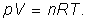
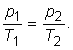

Numim transformare izocoră transformarea pe parcursul
căreia numărul de moli şi volumul sistemului termodinamic rămân nemodificate.
Numim transformare izocoră transformarea pe parcursul
căreia numărul de moli şi volumul sistemului termodinamic rămân nemodificate.
Elemente de termodinamică. |
Transformări simple ale gazului ideal |
E-4. |
Transformarea izocoră |
Numim transformare izocoră transformarea pe parcursul
căreia numărul de moli şi volumul sistemului termodinamic rămân nemodificate.
 Provocarea 4-1
Provocarea 4-1
Care este relaţia dintre parametrii variabili ai unui gaz ideal care participă la o transformare izocoră?
Parametrii de stare ai gazului ideal sunt presiunea, volumul, numărul de moli şi temperatura. În oricare stare de echilibru, între aceşti parametrii există relaţia dată de ecuaţia de stare:
|  | (1) |
Dacă exprimi presiunea gazului, obţii:
Legea transformării izocore: Presiunea gazului ideal este
direct proporţională cu temperatura absolută a gazului:
| (2) |
sau, echivalent:
| (3) |
Provocarea 4-2
Un gaz ideal se află într−o stare iniţială, caracterizată de parametrii (p1, V, n, T1). Gazul participă la o transformare izocoră până într−o stare finală, caracterizată de parametrii (p2, V, n, T2), ca în figura 4−1.
Figura 4-1. O transformare izocoră a unui gaz ideal.
Care este relaţia dintre parametrii care caracterizează stările iniţială şi finală ale gazului ideal?
Dacă utilizezi forma (3) a legii transformării izocore, obţii imediat:
|  | (4) |
Relaţia obţinută îţi permite să calculezi oricare dintre parametrii variabili ai gazului ideal, dacă îi cunoşti pe ceilalţi trei.
Provocarea 4-3
Cum ai reprezenta grafic stările prin care trece un gaz ideal pe parcursul unei transformări izocore?
Într−o transformare izocoră, parametrii variabili sunt presiunea şi temperatura gazului. Într−un sistem de axe, în care una dintre axe este presiunea, iar cealaltă este temperatura, fiecărei stări a gazului îi corespunde un punct de coordonate (p, T), ca în figura 4−2.

Figura 4-2. Reprezentarea grafică a unei transformări izocore, în coordonate p−T.
În coordonate p−T, reprezentarea grafică a unei transformări izocore a gazului ideal este un segment aparţinând unei drepte care trece prin originea sistemului de coordonate. Panta dreptei (înclinarea acesteia faţă de axa temperaturii), definită ca , este chiar constanta din legea transformării izocore: .
Legea transformării izocore a fost descoperită experimental de către francezul Guillaume Amontons, în 1699.
În cazul aerului, la presiuni în jurul celei atmosferice normale şi temperaturi în intervalul 0°C...100°C, abaterile faţă de relaţia (3) sunt mai mici de 1% (tabelul 4−1).
Tabelul 4-1. Valori experimentale pentru un proces izocor al aerului.
| T (K) |
p (kPa) |
p/T (Pa/K) |
| 273 | 101 | 370 |
| 298 | 110 | 369 |
| 345 | 127 | 368 |
| 373 | 139 | 373 |
În aceste condiţii de temperatură şi presiune, aerul şi, în general, gazele reale se comportă asemănător modelului gazului ideal.
Provocarea 4-4
Cât este variaţia energiei interne a gazului ideal care participă la transformarea izocoră prezentată în figura 4−1?
Energia internă este o mărime de stare, astfel că variaţia energiei interne depinde doar de stările iniţială şi finală, nu şi de transformarea care are loc între aceste stări. Astfel:
Provocarea 4-5
Cât sunt lucrul mecanic şi cantitatea de căldură transferate între gazul ideal şi mediul său pe parcursul unei transformări izocore?
Într−o transformare izocoră nu se modifică volumul gazului, astfel că acesta nu schimbă lucru mecanic cu mediul său:
Poţi acum calcula cantitatea de căldură schimbată între sistem şi mediul său aplicând principiul I al termodinamicii. Obţii astfel:
Cantitatea reprezintă cantitatea de căldură ce trebuie schimbată cu mediul de fiecare mol de gaz pentru a modifica temperatura gazului cu un kelvin.
Această cantitate este un coeficient caloric, numit căldură molară la volum constant (notat CV).
Astfel, cantitatea de căldură schimbată cu mediul într−un proces izocor este:
caldura molară la volum constant a gazului ideal fiind:
Provocarea 4-6
Folosind datele din tabelul 3−1 (secţiunea D−3), calculează căldurile molare la volum constant pentru fiecare gaz şi compară−le cu cele ale gazului ideal corespunzător.
Cât sunt abaterile procentuale?